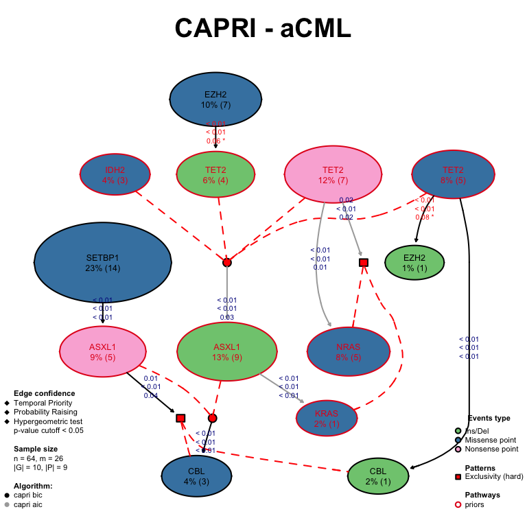

TRONCO provides functions to plot a model, access information about the probabilities used to extract it from data, and two types of confidence measures: those used to infer the model, and those computed a posteriori from it.
Function view provides updated information about a model if this is available.
view(model.capri)
## Description: CAPRI - aCML.
## -- TRONCO Dataset: n=64, m=26, |G|=10, patterns=9.
## Events (types): Ins/Del, Missense point, Nonsense point, Pattern.
## Colors (plot): #7FC97F, #4483B0, #fab3d8, slateblue.
## Events (5 shown):
## gene 4 : Ins/Del TET2
## gene 5 : Ins/Del EZH2
## gene 6 : Ins/Del CBL
## gene 7 : Ins/Del ASXL1
## gene 29 : Missense point SETBP1
## Genotypes (5 shown):
##
## -- TRONCO Model(s): CAPRI
## Score optimization via Hill-Climbing.
## BIC, AIC regularizers.
## BIC: score -566.1804 | logLik -499.6382 | 6 selective advantage relations.
## AIC: score -528.7683 | logLik -492.7683 | 10 selective advantage relations.
## Available confidence measures:
## Temporal priority | Probability raising | HypergeometricVisualizing a reconstructed model
We can plot a model by using function . Here, we plot the aCML model inferred by CAPRI with BIC and AIC as a regolarizator. We set some parameters to get a nice plot (scaling etc.), and distinguish the edges detected by the two regularization techniques. The confidence of each edge is shown in terms of temporal priority and probability raising (selective advantage scores) and hypergeometric testing (statistical relevance of the dataset of input). Events are annotated as in the oncoprint, edge p-values above a minium threshold (default 0.05) are red.
tronco.plot(model.capri, fontsize = 12, scale.nodes = 0.6, confidence = c('tp', 'pr', 'hg'), height.logic = 0.25, legend.cex = 0.35, pathways = list(priors = gene.hypotheses), label.edge.size = 10)
## *** Expanding hypotheses syntax as graph nodes:
## *** Rendering graphics
## Nodes with no incoming/outgoing edges will not be displayed.
## Annotating nodes with pathway information.
## Annotating pathways with RColorBrewer color palette Set1 .
## Adding confidence information: tp, pr, hg
## RGraphviz object prepared.
## Plotting graph and adding legends.
We can also make a multiplot with this function, which in this case we do by showing the models inferred by the other algorithms based on Minimum Spanning Trees.
par(mfrow = c(2,2)) tronco.plot(model.caprese, fontsize = 22, scale.nodes = 0.6, legend = FALSE)
## *** Expanding hypotheses syntax as graph nodes:
## *** Rendering graphics
## Nodes with no incoming/outgoing edges will not be displayed.
## Set automatic fontsize for edge labels: 11
## RGraphviz object prepared.
## Plotting graph and adding legends.tronco.plot(model.edmonds, fontsize = 22, scale.nodes = 0.6, legend = FALSE)
## *** Expanding hypotheses syntax as graph nodes:
## *** Rendering graphics
## Nodes with no incoming/outgoing edges will not be displayed.
## Set automatic fontsize for edge labels: 11
## RGraphviz object prepared.
## Plotting graph and adding legends.tronco.plot(model.chowliu, fontsize = 22, scale.nodes = 0.6, legend.cex = .7)
## *** Expanding hypotheses syntax as graph nodes:
## *** Rendering graphics
## Nodes with no incoming/outgoing edges will not be displayed.
## Set automatic fontsize for edge labels: 11
## RGraphviz object prepared.
## Plotting graph and adding legends.tronco.plot(model.prim, fontsize = 22, scale.nodes = 0.6, legend = FALSE)
## *** Expanding hypotheses syntax as graph nodes:
## *** Rendering graphics
## Nodes with no incoming/outgoing edges will not be displayed.
## Set automatic fontsize for edge labels: 11
## RGraphviz object prepared.
## Plotting graph and adding legends.
aCML data processed model by algorithms to extract models from individual patients, we show the otput of CAPRESE, and all algorithms based on Minimum Spanning Trees (Edmonds, Chow Liu and Prim). Only the model retrieved by Chow Liu has two different edge colors as it was regularized with two different strategies: AIC and BIC.
Accessing information within a model (e.g., confidence)
We can visualize a summary of the parameters used for the reconstruction, test if an object has a model or delete it (which shall be done to retrieve the original dataset).
as.data.frame(as.parameters(model.capri))
## algorithm command regularization do.boot nboot pvalue min.boot min.stat
## 1 CAPRI hc bic TRUE 5 0.05 3 TRUE
## 2 CAPRI hc aic TRUE 5 0.05 3 TRUE
## boot.seed silent error.rates.epos error.rates.eneg restart
## 1 12345 FALSE 0 0 100
## 2 12345 FALSE 0 0 100has.model(model.capri)
## [1] TRUEdataset = delete.model(model.capri)
Model structure
A set of functions can be used to visualize the content of object which contains the reconstructed model. For instance, we can access the adjacency matrix of a model by using as.adj.matrix which will return a matrix for each one of the regularizators used – in this case because CAPRI was run with both BIC/AIC.
str(as.adj.matrix(model.capri))
## List of 2
## $ capri_bic: num [1:26, 1:26] 0 0 0 0 0 0 0 0 1 0 ...
## ..- attr(*, "dimnames")=List of 2
## .. ..$ : chr [1:26] "gene 4" "gene 5" "gene 6" "gene 7" ...
## .. ..$ : chr [1:26] "gene 4" "gene 5" "gene 6" "gene 7" ...
## $ capri_aic: num [1:26, 1:26] 0 0 0 0 0 0 0 0 1 0 ...
## ..- attr(*, "dimnames")=List of 2
## .. ..$ : chr [1:26] "gene 4" "gene 5" "gene 6" "gene 7" ...
## .. ..$ : chr [1:26] "gene 4" "gene 5" "gene 6" "gene 7" ...Empirical probabilities
Every model is inferred by estimating the empirical marginal, joint and conditional probabilities for all the events, from input data. These in some cases are estimated by a bootstrap procedure (see the algorithms implemented). TRONCO has functions to extract such table, that could be in turn printed by using external functions for, e.g., heatmap visualization (see below for an example via the pheatmap package). We show these functions working with the CAPRI model; in this case the tables are the same for both BIC/AIC structures as they are computed before performing penalized likelihood-fit. The marginal P(x) for x an event in the dataset are obtained by as.marginal.probs.
marginal.prob = as.marginal.probs(model.capri) head(marginal.prob$capri_bic)
## marginal probability
## gene 4 0.064630682
## gene 5 0.009943182
## gene 6 0.017045455
## gene 7 0.126420455
## gene 29 0.230113636
## gene 30 0.078125000Similarly, the joint P(x,y) for every pair of events in the dataset is given by as.joint.probs.
joint.prob = as.joint.probs(model.capri, models='capri_bic') joint.prob$capri_bic[1:3, 1:3]
## gene 4 gene 5 gene 6
## gene 4 0.06463068 0.000000000 0.00000000
## gene 5 0.00000000 0.009943182 0.00000000
## gene 6 0.00000000 0.000000000 0.01704545And as.conditional.probs finally gives the conditional P(x|y) for every edge in the dataset.
conditional.prob = as.conditional.probs(model.capri, models='capri_bic') head(conditional.prob$capri_bic)
## conditional probability
## gene 4 0.2916667
## gene 5 0.1296296
## gene 6 0.2222222
## gene 7 1
## gene 29 1
## gene 30 1Confidence measures
Confidence scores can be accessed by function , which takes as parameter the type of confidence measure that one wants to access to. This will work for either confidence measures assessed before reconstructing the model – if available –, or afterwards.
str(as.confidence(model.capri, conf = c('tp', 'pr', 'hg')))
## List of 3
## $ hg: num [1:26, 1:26] 1 0.0625 0.0625 0.4219 0.6665 ...
## ..- attr(*, "dimnames")=List of 2
## .. ..$ : chr [1:26] "gene 4" "gene 5" "gene 6" "gene 7" ...
## .. ..$ : chr [1:26] "gene 4" "gene 5" "gene 6" "gene 7" ...
## $ tp: num [1:26, 1:26] 1.00 1.00 1.00 3.03e-06 6.32e-09 ...
## ..- attr(*, "dimnames")=List of 2
## .. ..$ : chr [1:26] "gene 4" "gene 5" "gene 6" "gene 7" ...
## .. ..$ : chr [1:26] "gene 4" "gene 5" "gene 6" "gene 7" ...
## $ pr: num [1:26, 1:26] 1 1 1 0.164 1 ...
## ..- attr(*, "dimnames")=List of 2
## .. ..$ : chr [1:26] "gene 4" "gene 5" "gene 6" "gene 7" ...
## .. ..$ : chr [1:26] "gene 4" "gene 5" "gene 6" "gene 7" ...Other functions visualize tables summarizing the statistics for each edge in the model, For instance, if one uses function as.selective.advantage.relations the p-values for temporal priority, probability raising and hypergeometric testing, as well as other information about each edge can be accessed, e.g., the number of observations for the upstream and the downstream events.
as.selective.advantage.relations(model.capri)
## $capri_bic
## SELECTS SELECTED OBS.SELECTS OBS.SELECTED
## 1 Missense point SETBP1 Nonsense point ASXL1 14 5
## 2 Missense point TET2 Ins/Del EZH2 5 1
## 3 Missense point TET2 Ins/Del CBL 5 1
## 4 Missense point EZH2 Ins/Del TET2 7 4
## 5 Nonsense point ASXL1 Pattern XOR_CBL 5 4
## 6 Pattern XOR_ASXL1 Missense point CBL 14 3
## TEMPORAL.PRIORITY PROBABILITY.RAISING HYPERGEOMETRIC
## 1 1.265401e-08 6.653729e-09 0.002029387
## 2 3.107997e-08 2.968162e-05 0.078125000
## 3 7.055746e-07 1.172650e-05 0.000000000
## 4 8.288203e-04 1.739852e-06 0.055944826
## 5 1.253535e-02 1.262353e-05 0.040873436
## 6 1.181758e-08 3.952172e-09 0.008736559
##
## $capri_aic
## SELECTS SELECTED OBS.SELECTS OBS.SELECTED
## 1 Ins/Del ASXL1 Missense point KRAS 9 1
## 2 Missense point SETBP1 Nonsense point ASXL1 14 5
## 3 Missense point TET2 Ins/Del EZH2 5 1
## 4 Missense point TET2 Ins/Del CBL 5 1
## 5 Missense point EZH2 Ins/Del TET2 7 4
## 6 Nonsense point TET2 Missense point NRAS 7 5
## 7 Nonsense point TET2 Pattern NRAS_xor_KRAS 7 6
## 8 Nonsense point ASXL1 Pattern XOR_CBL 5 4
## 9 Pattern TET2_xor_IDH2 Ins/Del ASXL1 17 9
## 10 Pattern XOR_ASXL1 Missense point CBL 14 3
## TEMPORAL.PRIORITY PROBABILITY.RAISING HYPERGEOMETRIC
## 1 6.724574e-09 8.364015e-07 0.000000000
## 2 1.265401e-08 6.653729e-09 0.002029387
## 3 3.107997e-08 2.968162e-05 0.078125000
## 4 7.055746e-07 1.172650e-05 0.000000000
## 5 8.288203e-04 1.739852e-06 0.055944826
## 6 5.292684e-04 1.416741e-07 0.011832364
## 7 1.562932e-02 1.825523e-07 0.022184702
## 8 1.253535e-02 1.262353e-05 0.040873436
## 9 1.218091e-08 1.638856e-07 0.025903967
## 10 1.181758e-08 3.952172e-09 0.008736559Confidence via non-parametric and statistical bootstrap
TRONCO provides three different strategies to perform bootstrap and assess confidence of each edge in terms of a score in the range [0, 100], where 100 is the highest confidence). Non-parametric (default) and statistical bootstrap strategies are available, and can be executed by calling function tronco.bootstrap with type parameter set appropriately. This function is parallel, and parameter cores.ratio (default 1) can be used to percentage of available cores that shall be used to compute the scores. Parameter nboot controls the number of bootstrap iterations.
model.boot = tronco.bootstrap(model.capri, nboot = 3, cores.ratio = 0)
## *** Executing now the bootstrap procedure, this may take a long time...
## Expected completion in approx. 00h:00m:05s
## Using 1 cores via "parallel"
## Reducing results
## Performed non-parametric bootstrap with 3 resampling and 0.05 as pvalue for the statistical tests.model.boot = tronco.bootstrap(model.boot, nboot = 3, cores.ratio = 0, type = 'statistical')
## *** Executing now the bootstrap procedure, this may take a long time...
## Expected completion in approx. 00h:00m:05s
## Using 1 cores via "parallel"
## Reducing results
## Performed statistical bootstrap with 3 resampling and 0.05 as pvalue for the statistical tests.Bootstrap scores can be annotated to the tronco.plot output by setting them via the confidence parameter confidence=c('npb', 'sb'). In this case edge thickness will be proportional to the non-parametric npb) scores – the last to appear in the confidence parameter.
tronco.plot(model.boot, fontsize = 12, scale.nodes = .6, confidence=c('sb', 'npb'), height.logic = 0.25, legend.cex = .35, pathways = list(priors= gene.hypotheses), label.edge.size=10)
## *** Expanding hypotheses syntax as graph nodes:
## *** Rendering graphics
## Nodes with no incoming/outgoing edges will not be displayed.
## Annotating nodes with pathway information.
## Annotating pathways with RColorBrewer color palette Set1 .
## Adding confidence information: sb, npb
## RGraphviz object prepared.
## Plotting graph and adding legends.aCML model reconstructed by CAPRI with AIC / BIC as regolarizators and annotated with both non-parametric and statistical bootstrap scores. Edge thickness is proportional to the non-parametric scores.
Bootstrap scores can extracted or visualized even with other TRONCO functions. For instance, we can accessall scores via as.bootstrap.scores, which resembles function as.selective.advantage.relations and will display the scores per edge. Notice that even function view gives an update output by mentioning the available bootstrap scores.
as.bootstrap.scores(model.boot)
## $capri_bic
## SELECTS SELECTED OBS.SELECTS OBS.SELECTED
## 1 Missense point SETBP1 Nonsense point ASXL1 14 5
## 2 Missense point TET2 Ins/Del EZH2 5 1
## 3 Missense point TET2 Ins/Del CBL 5 1
## 4 Missense point EZH2 Ins/Del TET2 7 4
## 5 Nonsense point ASXL1 Pattern XOR_CBL 5 4
## 6 Pattern XOR_ASXL1 Missense point CBL 14 3
## NONPAR.BOOT STAT.BOOT
## 1 33.33333 100
## 2 0.00000 100
## 3 33.33333 100
## 4 0.00000 100
## 5 33.33333 100
## 6 33.33333 100
##
## $capri_aic
## SELECTS SELECTED OBS.SELECTS OBS.SELECTED
## 1 Ins/Del ASXL1 Missense point KRAS 9 1
## 2 Missense point SETBP1 Nonsense point ASXL1 14 5
## 3 Missense point TET2 Ins/Del EZH2 5 1
## 4 Missense point TET2 Ins/Del CBL 5 1
## 5 Missense point EZH2 Ins/Del TET2 7 4
## 6 Nonsense point TET2 Missense point NRAS 7 5
## 7 Nonsense point TET2 Pattern NRAS_xor_KRAS 7 6
## 8 Nonsense point ASXL1 Pattern XOR_CBL 5 4
## 9 Pattern TET2_xor_IDH2 Ins/Del ASXL1 17 9
## 10 Pattern XOR_ASXL1 Missense point CBL 14 3
## NONPAR.BOOT STAT.BOOT
## 1 66.66667 100
## 2 33.33333 100
## 3 0.00000 100
## 4 33.33333 100
## 5 0.00000 100
## 6 33.33333 100
## 7 33.33333 100
## 8 66.66667 100
## 9 33.33333 100
## 10 0.00000 100view(model.boot)
## Description: CAPRI - aCML.
## -- TRONCO Dataset: n=64, m=26, |G|=10, patterns=9.
## Events (types): Ins/Del, Missense point, Nonsense point, Pattern.
## Colors (plot): #7FC97F, #4483B0, #fab3d8, slateblue.
## Events (5 shown):
## gene 4 : Ins/Del TET2
## gene 5 : Ins/Del EZH2
## gene 6 : Ins/Del CBL
## gene 7 : Ins/Del ASXL1
## gene 29 : Missense point SETBP1
## Genotypes (5 shown):
##
## -- TRONCO Model(s): CAPRI
## Score optimization via Hill-Climbing.
## BIC, AIC regularizers.
## BIC: score -566.1804 | logLik -499.6382 | 6 selective advantage relations.
## AIC: score -528.7683 | logLik -492.7683 | 10 selective advantage relations.
## Available confidence measures:
## Temporal priority | Probability raising | Hypergeometric
## Bootstrap estimation available.If we want to access a matrix with the scores and visualize that in a heatmap we can use for instance the pheatmap function of TRONCO. In this case we need to use also function keysToNames to translate internal TRONCO keys to mnemonic names in the plot
pheatmap(keysToNames(model.boot, as.confidence(model.boot, conf = 'sb')$sb$capri_aic) * 100, main = 'Statistical bootstrap scores for AIC model', fontsize_row = 6, fontsize_col = 6, display_numbers = TRUE, number_format = "%d" )

Heatmap of the bootstrap scores for the CAPRI aCML model (via AIC regularization).
Confidence via cross-validation (entropy loss, prediction and posterior classification errors)
TRONCO implements k-fold cross-validation routines (from the bnlearn package) to provide estimates of the following statistics:
- the negative entropy (via
tronco.kfold.eloss) of a whole model ? i.e., the negated expected log-likelihood of the test set for the Bayesian network fitted from the training set. - the prediction error (via
tronco.kfold.prederr) for a single node x and its parents set X – i.e., how precisely we can predict the values of x by using only the information present in its local distribution, via X. - the posterior classification error (via
tronco.kfold.posterr) for a single node x and one of its parent node y in X – i.e., the values of x are predicted using only the information present in y by likelihood weighting and Bayesian posterior estimates.
By default, a 10 repetitions from 10-fold cross-validation experiment are perfomed, for all the models which are found inside a TRONCO object – in this case 2, one for CAPRI with BIC and one for CAPRI with AIC.
model.boot = tronco.kfold.eloss(model.boot)
## Calculating entropy loss with k-fold cross-validation
## [ k = 10 | runs = 10 | regularizer = capri_bic ] ... DONE
## Model logLik = -499.6382
## Mean eloss = 8.376919 | 1.676597 %
## Stdev eloss = 0.1125324
## Calculating entropy loss with k-fold cross-validation
## [ k = 10 | runs = 10 | regularizer = capri_aic ] ... DONE
## Model logLik = -492.7683
## Mean eloss = 8.367807 | 1.698122 %
## Stdev eloss = 0.08515295model.boot = tronco.kfold.prederr(model.boot, runs = 2, cores.ratio = 0)
## *** Using 1 cores via "parallel"
## Scanning 26 nodes for their prediction error (all parents).
## Regularizer: capri_bic
## *** Reducing results
## Scanning 26 nodes for their prediction error (all parents).
## Regularizer: capri_aic
## *** Reducing resultsmodel.boot = tronco.kfold.posterr(model.boot, runs = 2, cores.ratio = 0)
## *** Using 1 cores via "parallel"
## Scanning 6 edges for posterior classification error.
## Regularizer: capri_bic
## *** Reducing results
## Scanning 10 edges for posterior classification error.
## Regularizer: capri_aic
## *** Reducing resultsThese results can be visualized in terms of summary tables, as for the other confidence scores.
as.kfold.eloss(model.boot)
## Mean %-of-logLik Stdev
## capri_bic 8.376919 1.676597 0.11253236
## capri_aic 8.367807 1.698122 0.08515295as.kfold.prederr(model.boot)
## $capri_bic
## SELECTED MEAN.PREDERR SD.PREDERR
## 5 Missense point SETBP1 0.2187500 0.00000000
## 6 Missense point NRAS 0.0781250 0.00000000
## 7 Missense point KRAS 0.0156250 0.00000000
## 8 Missense point TET2 0.0781250 0.00000000
## 9 Missense point EZH2 0.1093750 0.00000000
## 10 Missense point CBL 0.0468750 0.00000000
## 11 Missense point IDH2 0.0468750 0.00000000
## 12 Missense point SF3B1 0.0156250 0.00000000
## 13 Missense point CSF3R 0.0781250 0.00000000
## 14 Nonsense point TET2 0.1093750 0.00000000
## 15 Nonsense point EZH2 0.0312500 0.00000000
## 16 Nonsense point ASXL1 0.0781250 0.00000000
## 17 Nonsense point CSF3R 0.0468750 0.00000000
## 18 Pattern NRAS_xor_KRAS 0.0937500 0.00000000
## 19 Pattern SF3B1_xor_ASXL1 0.2343750 0.00000000
## 20 Pattern TET2_xor_IDH2 0.2656250 0.00000000
## 21 Pattern TET2_or_IDH2 0.2812500 0.00000000
## 22 Pattern XOR_TET2 0.2500000 0.00000000
## 23 Pattern XOR_EZH2 0.1562500 0.00000000
## 24 Pattern XOR_CBL 0.0859375 0.01104854
## 25 Pattern XOR_ASXL1 0.2187500 0.00000000
## 26 Pattern OR_CSF3R 0.1093750 0.00000000
##
## $capri_aic
## SELECTED MEAN.PREDERR SD.PREDERR
## 5 Missense point SETBP1 0.2187500 0.00000000
## 6 Missense point NRAS 0.0781250 0.00000000
## 7 Missense point KRAS 0.0156250 0.00000000
## 8 Missense point TET2 0.0781250 0.00000000
## 9 Missense point EZH2 0.1093750 0.00000000
## 10 Missense point CBL 0.0468750 0.00000000
## 11 Missense point IDH2 0.0468750 0.00000000
## 12 Missense point SF3B1 0.0156250 0.00000000
## 13 Missense point CSF3R 0.0781250 0.00000000
## 14 Nonsense point TET2 0.1093750 0.00000000
## 15 Nonsense point EZH2 0.0312500 0.00000000
## 16 Nonsense point ASXL1 0.0781250 0.00000000
## 17 Nonsense point CSF3R 0.0468750 0.00000000
## 18 Pattern NRAS_xor_KRAS 0.1015625 0.01104854
## 19 Pattern SF3B1_xor_ASXL1 0.2343750 0.00000000
## 20 Pattern TET2_xor_IDH2 0.2656250 0.00000000
## 21 Pattern TET2_or_IDH2 0.2812500 0.00000000
## 22 Pattern XOR_TET2 0.2500000 0.00000000
## 23 Pattern XOR_EZH2 0.1562500 0.00000000
## 24 Pattern XOR_CBL 0.0937500 0.02209709
## 25 Pattern XOR_ASXL1 0.2187500 0.00000000
## 26 Pattern OR_CSF3R 0.1093750 0.00000000as.kfold.posterr(model.boot)
## $capri_bic
## SELECTS SELECTED MEAN.POSTERR SD.POSTERR
## 1 Missense point SETBP1 Nonsense point ASXL1 0.078125 0
## 2 Missense point TET2 Ins/Del EZH2 0.015625 0
## 3 Missense point TET2 Ins/Del CBL 0.015625 0
## 4 Missense point EZH2 Ins/Del TET2 0.062500 0
## 5 Nonsense point ASXL1 Pattern XOR_CBL 0.078125 0
## 6 Pattern XOR_ASXL1 Missense point CBL 0.046875 0
##
## $capri_aic
## SELECTS SELECTED MEAN.POSTERR SD.POSTERR
## 1 Ins/Del ASXL1 Missense point KRAS 0.0156250 0.00000000
## 2 Missense point SETBP1 Nonsense point ASXL1 0.0781250 0.00000000
## 3 Missense point TET2 Ins/Del EZH2 0.0156250 0.00000000
## 4 Missense point TET2 Ins/Del CBL 0.0156250 0.00000000
## 5 Missense point EZH2 Ins/Del TET2 0.0625000 0.00000000
## 6 Nonsense point TET2 Missense point NRAS 0.0781250 0.00000000
## 7 Nonsense point TET2 Pattern NRAS_xor_KRAS 0.0937500 0.00000000
## 8 Nonsense point ASXL1 Pattern XOR_CBL 0.0859375 0.01104854
## 9 Pattern TET2_xor_IDH2 Ins/Del ASXL1 0.1406250 0.00000000
## 10 Pattern XOR_ASXL1 Missense point CBL 0.0468750 0.00000000Notice that these can be combined to create a nice table with all these statistics – we make here the example of a table with all the BIC statistics. This format can be readily exported to external spreadsheets for further visualization.
tabular = function(obj, M){ tab = Reduce( function(...) merge(..., all = TRUE), list(as.selective.advantage.relations(obj, models = M), as.bootstrap.scores(obj, models = M), as.kfold.prederr(obj, models = M), as.kfold.posterr(obj,models = M))) # merge reverses first with second column tab = tab[, c(2,1,3:ncol(tab))] tab = tab[order(tab[, paste(M, '.NONPAR.BOOT', sep='')], na.last = TRUE, decreasing = TRUE), ] return(tab) } head(tabular(model.boot, 'capri_bic'))
## capri_bic.SELECTS capri_bic.SELECTED capri_bic.OBS.SELECTS
## 1 Missense point TET2 Ins/Del CBL 5
## 4 Pattern XOR_ASXL1 Missense point CBL 14
## 13 Missense point SETBP1 Nonsense point ASXL1 14
## 23 Nonsense point ASXL1 Pattern XOR_CBL 5
## 2 Missense point TET2 Ins/Del EZH2 5
## 3 Missense point EZH2 Ins/Del TET2 7
## capri_bic.OBS.SELECTED capri_bic.TEMPORAL.PRIORITY
## 1 1 7.055746e-07
## 4 3 1.181758e-08
## 13 5 1.265401e-08
## 23 4 1.253535e-02
## 2 1 3.107997e-08
## 3 4 8.288203e-04
## capri_bic.PROBABILITY.RAISING capri_bic.HYPERGEOMETRIC capri_bic.NONPAR.BOOT
## 1 1.172650e-05 0.000000000 33.33333
## 4 3.952172e-09 0.008736559 33.33333
## 13 6.653729e-09 0.002029387 33.33333
## 23 1.262353e-05 0.040873436 33.33333
## 2 2.968162e-05 0.078125000 0.00000
## 3 1.739852e-06 0.055944826 0.00000
## capri_bic.STAT.BOOT capri_bic.MEAN.PREDERR capri_bic.SD.PREDERR
## 1 100 NA NA
## 4 100 0.0468750 0.00000000
## 13 100 0.0781250 0.00000000
## 23 100 0.0859375 0.01104854
## 2 100 NA NA
## 3 100 NA NA
## capri_bic.MEAN.POSTERR capri_bic.SD.POSTERR
## 1 0.015625 0
## 4 0.046875 0
## 13 0.078125 0
## 23 0.078125 0
## 2 0.015625 0
## 3 0.062500 0We finally show the plot of the model with the confidences by cross-validation.
tronco.plot(model.boot, fontsize = 12, scale.nodes = .6, confidence=c('npb', 'eloss', 'prederr', 'posterr'), height.logic = 0.25, legend.cex = .35, pathways = list(priors= gene.hypotheses), label.edge.size=10)
## *** Expanding hypotheses syntax as graph nodes:
## *** Rendering graphics
## Nodes with no incoming/outgoing edges will not be displayed.
## Annotating nodes with pathway information.
## Annotating pathways with RColorBrewer color palette Set1 .
## Adding confidence information: npb, eloss, prederr, posterr
## RGraphviz object prepared.
## Plotting graph and adding legends.aCML model reconstructed by CAPRI with AIC/BIC as regolarizators and annotated with non-parametric, as well as with entropy loss, prediction and posterior classification errors computed via cross-validation. Edge thickness is proportional to the non-parametric scores.